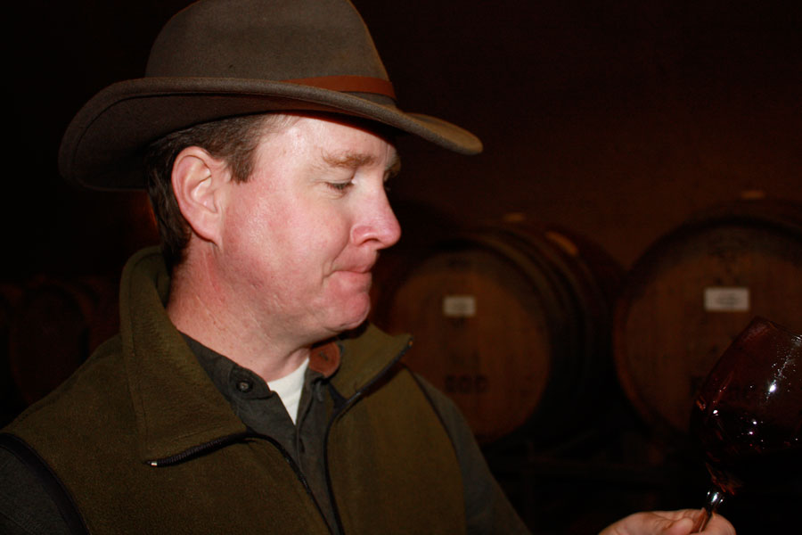
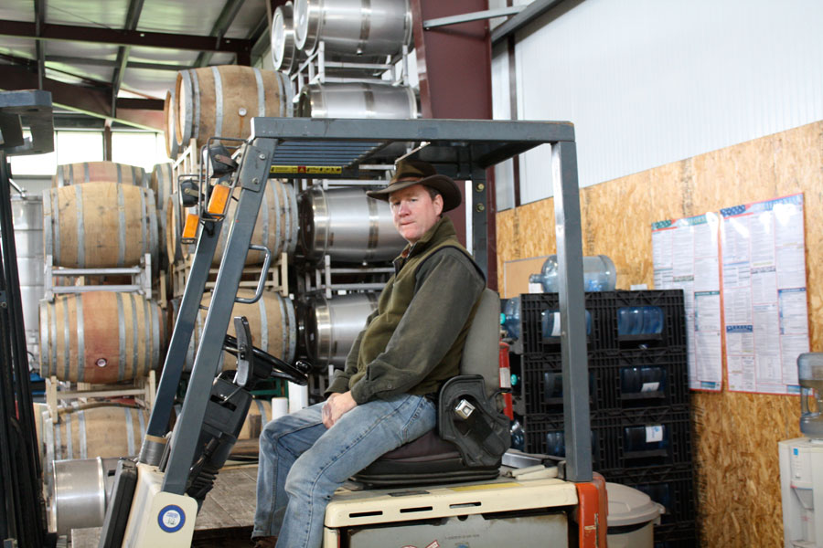
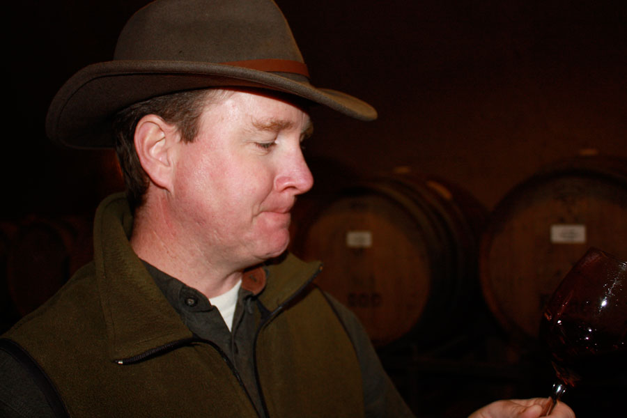
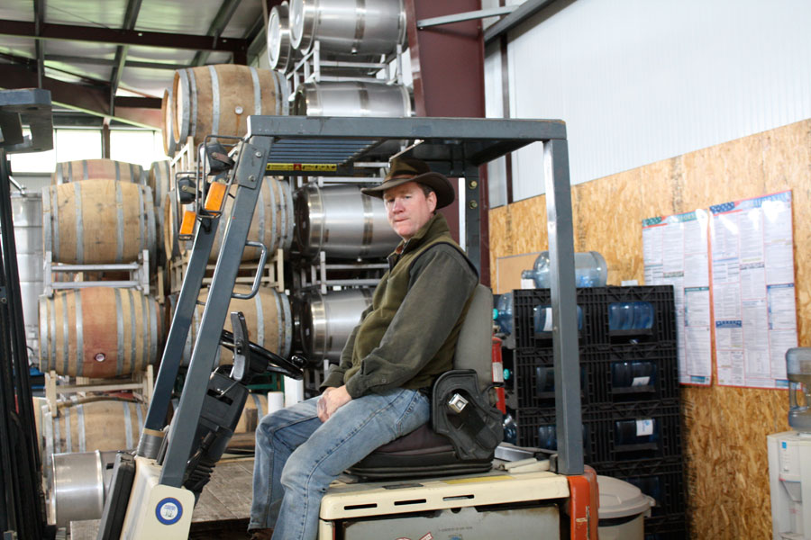

About Us

 





The Label
The MacGregors are the only clan to have been outlawed by the King of England, not once but twice. We were kept from carrying weapons or meeting in groups of four or more. There arose a warrant to hunt down MacGregors who violated those conditions. Then there was the whole Rob Roy debacle. Names were changed and consequently switched back. Many men were hanged. With all of this excitement (feudal soap opera?) I had to put a reference to my tartan on the label. My good friend Robert Perkins is the designer.
The Name
Trinafour is a tiny village in the heart of Scotland, lying in the Perthshire Highlands. There, my Great Grandfather kept game at a small estate. My father was born a few miles away in the town of Perth. He suggested the name, knowing my love of the rugged, severe, lonely beauty of the area, and my fondness of all things game and their affinity with wines of concentration and nuance. He noted the link to an agrarian past, which he’d hoped would continue with at least one of his offspring. That charge has been left to me.
Why Now?
I had always wanted to hang a shingle of my own. I’d been happily making wine for over 15 years. I’d had the opportunity to learn from some of the great names in this industry, notably David Ramey of eponymous Ramey Cellars and Bob Cabral of Williams Sellyem. I’d had years of experience working with native yeasts, natural acidity, unfiltered bottling, learning how to take measured risks to put something special, more exciting and demanding into the bottle. What I had not found was the place, the first vineyard that felt right, perfect. I moved from Dry Creek to Mendocino County with my family in 2002, and I first met the now famous (SF Chronicle, 8/1/10) Alvin Tollini at Niemi Vineyard the following year. In an instant, I knew this would be the source of the raw materials, that is to say the grapes, to begin Trinafour Cellars.

Contact Us: 707.467.0737 | alexmacgregor@sbcglobal.com
About Us | The Vineyards | The Wines | Wine Shops & Restaurants